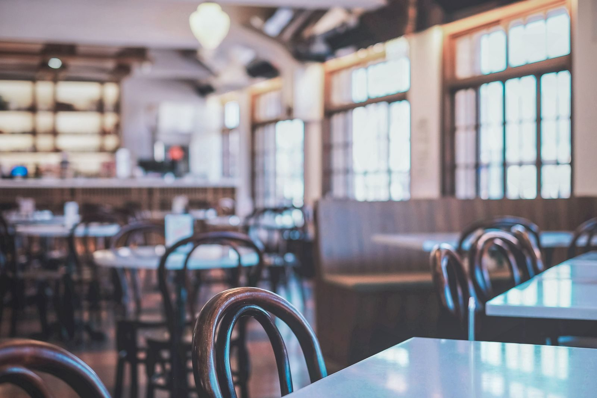
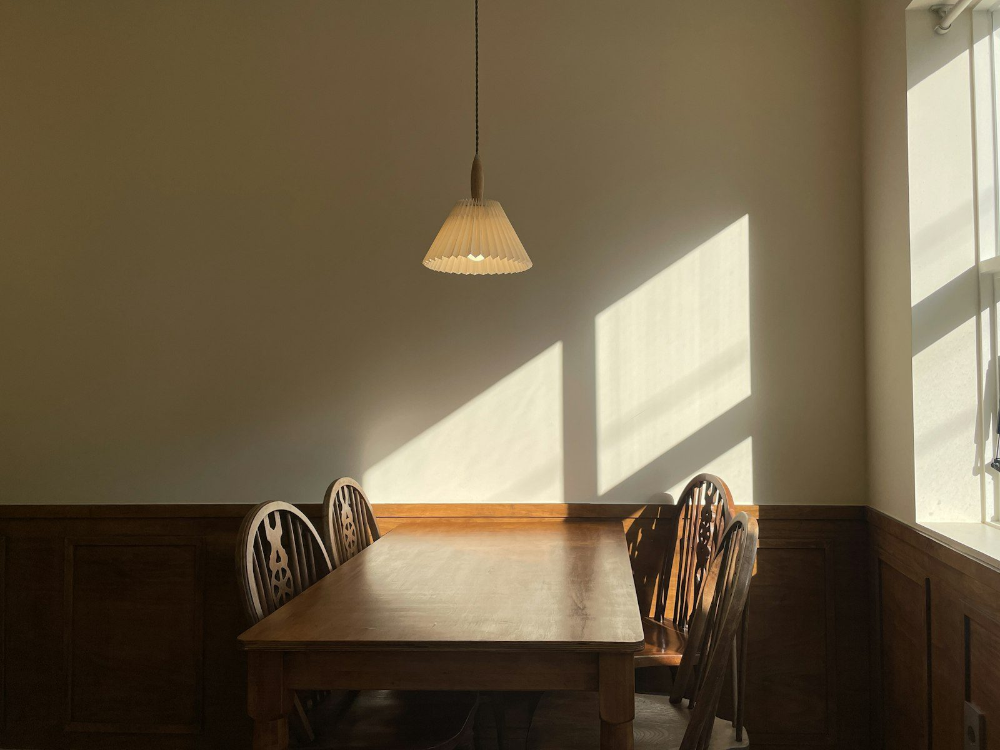
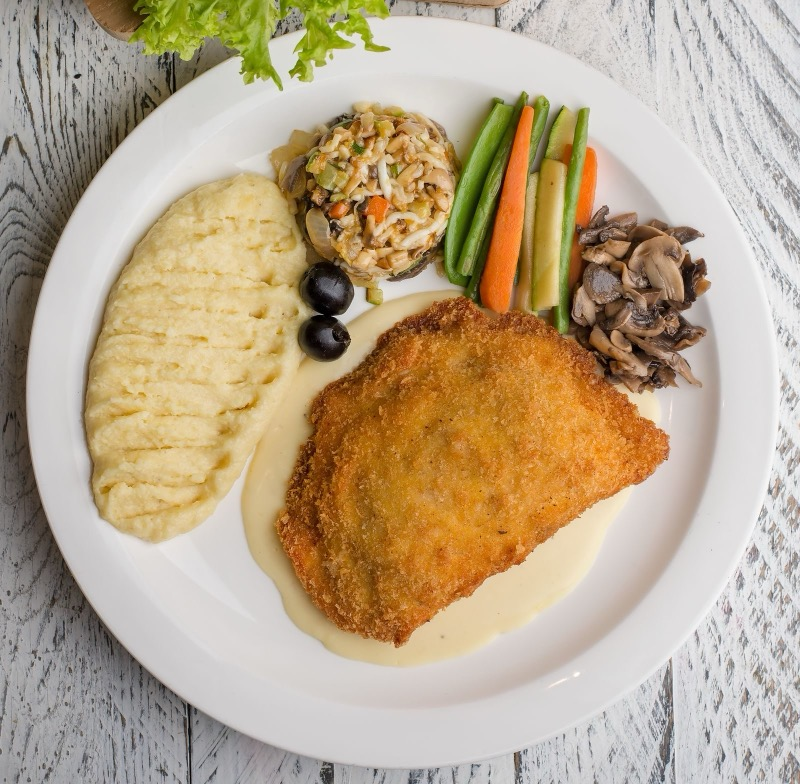
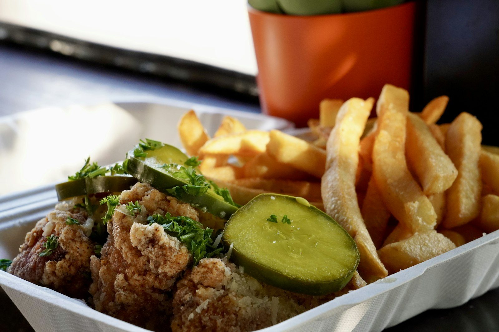
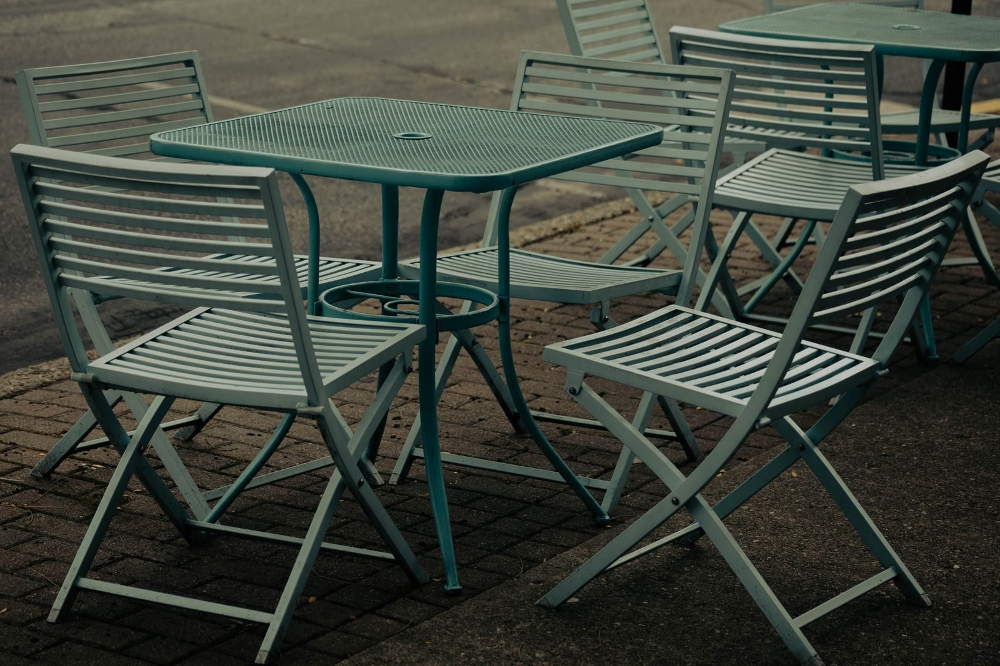
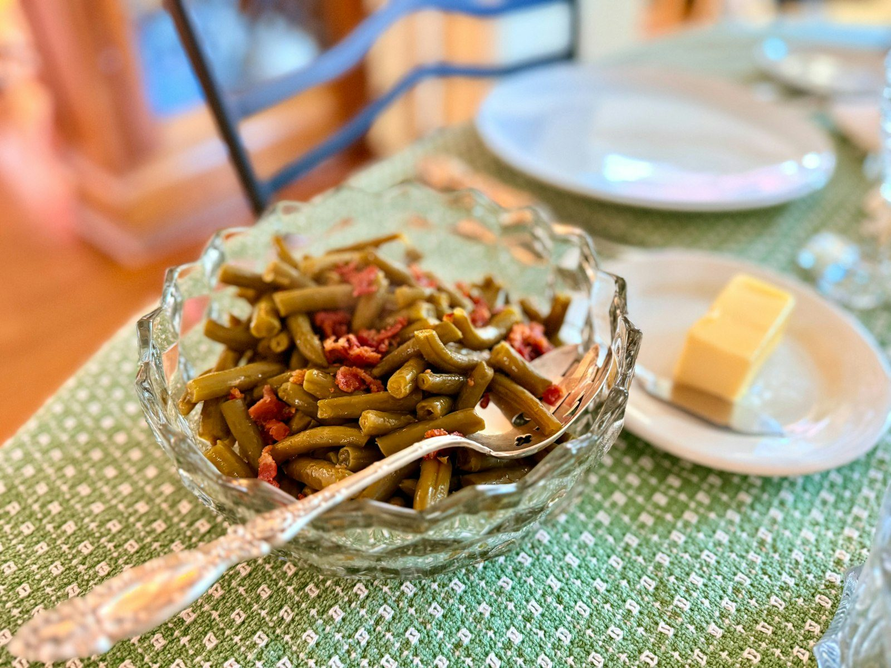
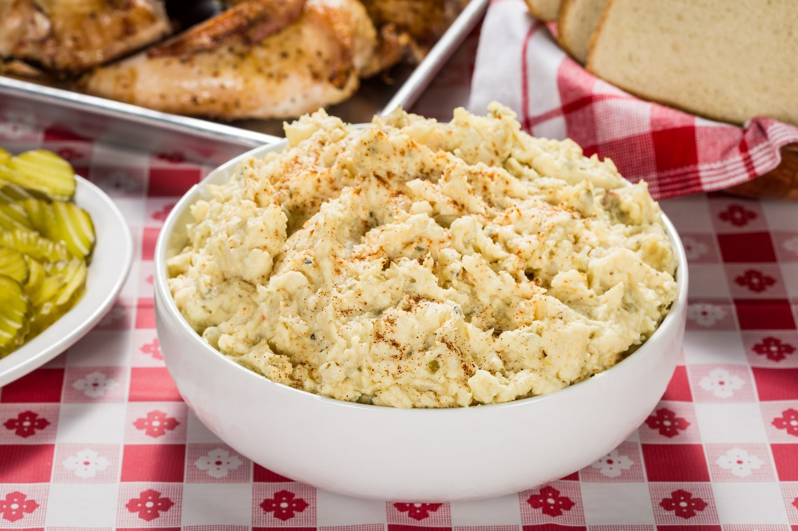
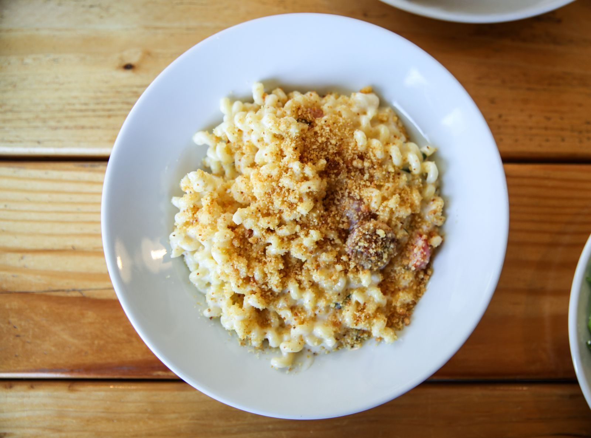
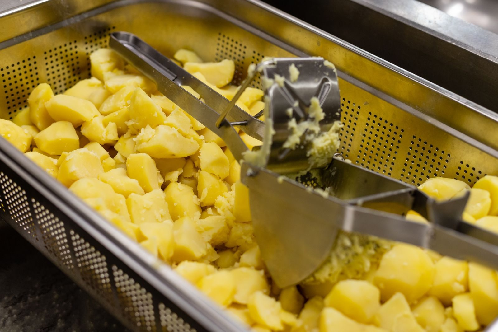
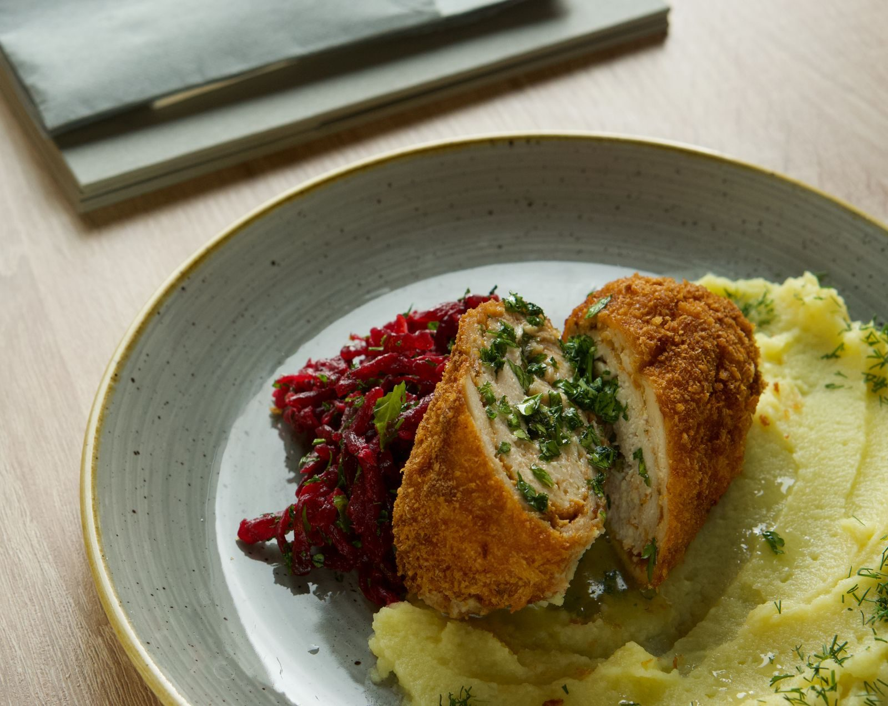

Dine in
Take a seat inside and stay a while.
Sue's Kitchen is a family style restaurant at 709 South Main Street, with homemade food and a wonderful staff.


A meat and three is a plate with one meat and three sides to go with it.
Pick the one that fits your day.

Take a seat inside and stay a while.

We offer curbside pickup. Questions about it? Call (336) 356 4500.

When the weather is nice, grab a table outside.

Sue's Kitchen is a great place to eat with a wonderful staff & even greater homemade food




Call ahead to confirm
709 South Main Street Dobson, NC 27017
Dine in, curbside pickup or outdoor seating. Call with any question before you come.